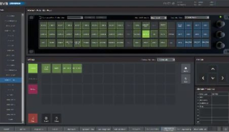

Interface designer · Broadcast control systems
Justin Hui
I design, build and support the operator interfaces that live broadcast relies on, for control rooms where speed and reliability matter most.
- Years live
- 11
- Facilities
- 15+
- UX cert
- 2025
Justin Hui, 2015 to now
Drag the handle along the line, or use the arrows.
01 · Profile
With the operator, start to finish
I am a Senior Technical Architect who designs, builds and supports user interfaces relied upon in the fast-paced, live broadcast space. I spent over ten years inside live production (cameras, replay, routing) and now ship custom operator interfaces for facilities where speed and reliability are critical.
I stay with the user through the whole process: planning with operators, modelling workflows, designing and coding the interfaces, then delivering and supporting them on air.
Interfaces in production
- NBC
- FOX World Cup
- MLB Network
- YES Network
- Scripps
- Gravity Media
- LMG
- Monumental
- Bell Centre
- Kraft Sports
- CA Assembly
- Rogers Media
- Dome Productions
- MLB
- and more…
- Your team?
02 · UI examples
Selected interfaces
Full case studies on request.

Proc Control
Designed for different formats and platforms, and built from pinnable modules so each operator can assemble their own custom dashboard.

Routing panel builder
Lets operators create the layouts they want on the fly, turning a complicated multi-step process into a visual experience.

System configuration guide
A configuration tool that doubles as a helper, pointing the user in the right direction and offering a hand through each step.
03 · Experience
EVS Broadcast Equipment
Nine years · 2017 to present
Senior Technical Architect
- Designed, programmed and troubleshot critical operator interfaces running daily at numerous live broadcast facilities, from single-operator routing panels to full master-control configuration applications.
- Turned operator workflows into human-centred designs: on-site consultation and review, panel design and iteration in Cerebrum Designer, hand-off and training, through to support.
- Delivered advanced training on Cerebrum and Cerebrum Designer, breaking complex engineering and design concepts down into easily understood stories.
- Consulted on end-to-end media infrastructure across news, sports, corporate tech, education, government and master control. Authored internal documentation and tools that carry a project from pre-sales through implementation to support.
Solutions Architect
- Shaped system architectures around customer requirements for Apple, Meta, Riot Games, NBC, ESPN and CBS: design drawings, tender responses, bills of material and quotations.
- Designed and delivered product demos with the sales team, built the Cerebrum hardware and software interfaces those demos and internal trainings depended on, and carried customers through go-live and hand-over to support.
Broadcast history
2015 — 2017- Video Operations Assistant
Control-room installation and maintenance, live broadcast systems, ballpark signage systems and gameday motion graphics.
- Technical Director / Video Engineer
Technical Director for the AT&T Park SF Giants video-board show; camera operator, video shader, replay and graphics operator across Bay Area venues.
- Control Room Technician
Technical Director, Chyron graphics and EVS replay for Sharks and Barracuda games.
- Assistant Video Engineer
Control room and facility engineering at Stanford Stadium, Maples Pavilion and associated venues; video-board content design and animation.
- WebEx Facilitator
Ran presenters and attendees through live streaming sessions.
04 · Approach
How I work
- 01
Observe
Design is solving a problem with style. Understand the user's problem, then make the solution fun to use.
- 02
Reduce
Simplify. Every element earns its space. Speed is king: break complex workflows down into simple interactions.
- 03
Improve
Delivery is just the beginning. Support what has been designed and relentlessly improve it with customer feedback.
05 · Toolset
Tools, certificates, school
Interface
- Cerebrum Designer
- Panel prototyping
- Hardware panels
- Workflow mapping
Creative
- Figma
- Photoshop
- After Effects
- Premiere Pro
Systems
- Git
- Bitbucket
- Jira
- Microsoft D365
- Cerebrum
- Visio
- Neuron
- IP Director
- LSM / XT-VIA
Certification
- 2025
- Foundations of User Experience (UX) Design · Google
- 2020
- AWS Certified Solutions Architect · Associate coursework
- +10
- Further licences and certifications, full list on request
Education
- 2013 — 2015
- College of San Mateo
Associate of Arts, Broadcast & Electronic Media · GPA 4.0 - 2007 — 2012
- Cal Poly, San Luis Obispo
Bachelor of Science, Biomedical Engineering
Now · Looking for
A UI / UX design role
Simple, clean interfaces anyone can pick up without training. Hybrid or remote from Millbrae, CA.